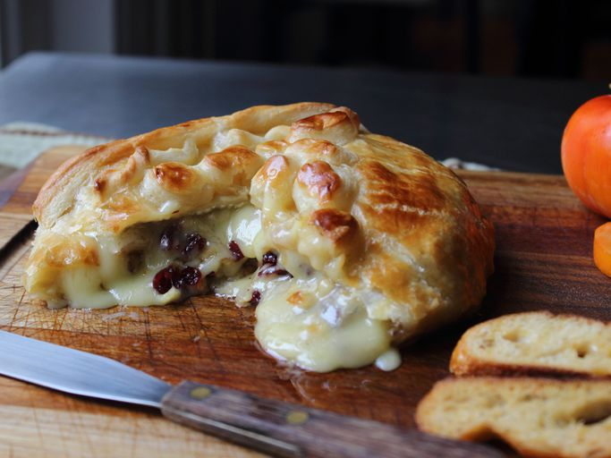

Baked Stuffed Brie with Cranberries & Walnuts

Ingredients
- 1 small wheel of Brie (about 6 to 8 inches), chilled
- ¼ cup dried cranberries
- ¼ cup chopped walnuts
- 1 sheet frozen puff pastry, thawed, plus extra for design
- 1 large egg
- 1 teaspoon water
Steps
- Use a sharp paring knife to score the side of Brie all the way around
- cutting directly on the equator through the rind. Wrap string or dental
floss around brie on the scored cut. Loop one end of the string over the
other to make a half knot. Pull the ends of the string in opposite directions to cut Brie in half.
Back To Main Menu